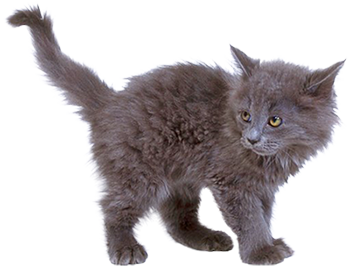
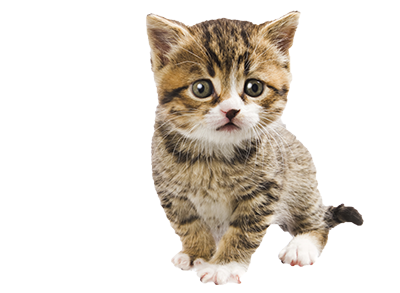

Animal cruelty is real
Every day animals are abused, neglected, and forced to fight. Animal cruelty takes many forms, some of the most commonly seen are dog fighting, puppy mills, animal hoarding, animal testing, and domestic abuse.
Dog fighting forces two dogs to fight for the purpose of entertainment and gambling. The dogs used in dog fighting are breed for the purpose of fighting. They are raised in isolation and trained to have aggression and a desire to fight. Fights take place in a rectangle pit and can last varying amounts of time until one of the dogs is severely injured. Dog fighting is illegal in the United States but it is still estimated that there are over 10,000 dogs involved in dog fighting each year.
Puppy mills are large-scale commercial dog breeding operations. Puppy mills are focused on profits and disregard the puppy’s health. The puppies are raised in overcrowded, unsanitary conditions. The female dogs used for breeding are forced to continue breeding with very little recovery time. The puppies are often sold when they are as young as 8 weeks. Many times these puppies have kidney or heart diseases due to the conditions they were raised in. It is estimated that there are more then 10,000 puppy mills throughout the United States.
Animal hoarding is when a household has too many animals to care for and begins to neglect the animals. Theses animals are often raised in poor conditions that are isolated from the rest of the community. Many times these animals have fleas, varmints, and diseases. It is estimated there are a quarter million animals in the United States who suffer from animal hoarding each year.
Everyday animals are used in labs across the United States for testing purposes. The most commonly used animals are mice, rats, reptiles and amphibians. The most common products to get tested on the animals are pharmaceuticals and cosmetic products. Most of the animals involved in animal testing are accounted for and are being used illegally. Every year there are over 100 million animals that are burned, crippled, poisoned, or abused.
Across America there are various issues of purposeful abuse to pets. Domestic abuse can range from purposefully not feeding the animal to harming the animal. Often times domestic animal abuse correlates with other domestic violence because the pet also gets targeted. The most common pet to experience this type of abuse is a dog, followed by a cat.


Signs of Animal Abuse
- Poor body condition
- Extreme physical weakness
- Animals that cower from owner
- Lack of water
- Lack of shelter
- Animal's behavior is not normal
- Too many animals on one property
- An owner abusing an animal

How you can help
You can donate! We make sure that your money will go to protecting these animals. Your money will go towards supporting getting animals out of these abussive situations. Once they are out of the situation your money goes towards providing a good home for them until a permant family is found.